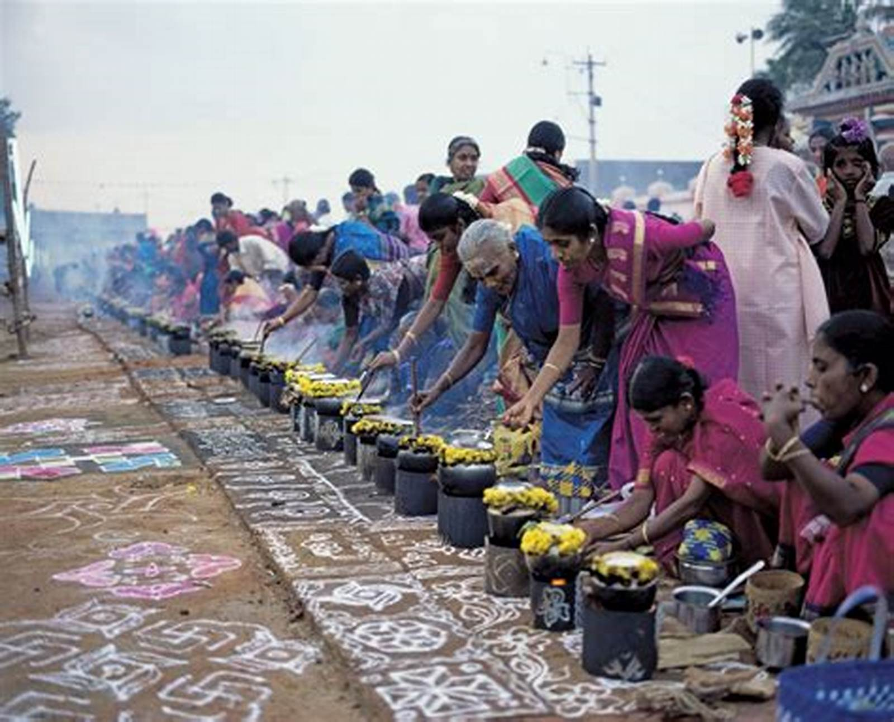
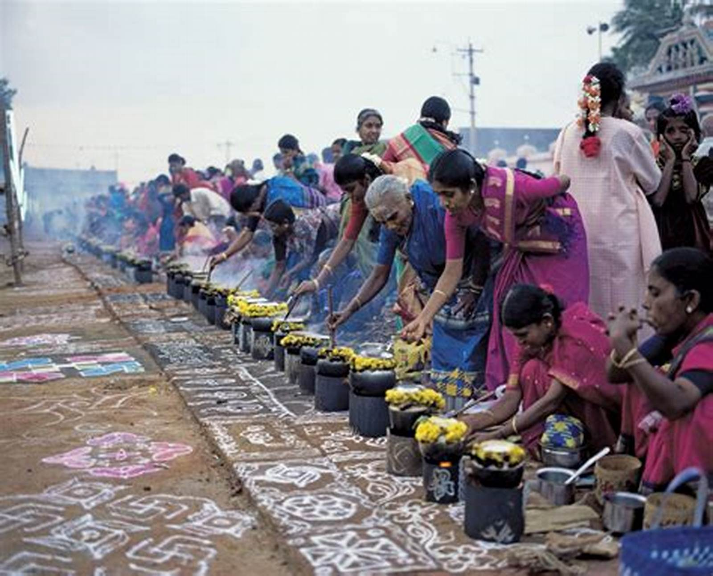

South India, also known as Southern India or Peninsular India, is the southern part of the Deccan Peninsula in India encompassing the states of Andhra Pradesh, Karnataka, Kerala, Tamil Nadu and Telangana as well as the union territories of Lakshadweep and Puducherry, occupying 19.31% of India's area (635,780 km2 or 245,480 sq mi) and 20% of India's population. It is bound by the Bay of Bengal in the east, the Arabian Sea in the west and the Indian Ocean in the south. The geography of the region is diverse, with two mountain ranges, the Western and Eastern Ghats, bordering the plateau heartland. The Godavari, Krishna, Kaveri, Penna, Tungabhadra and Vaigai rivers are important non-perennial sources of water. Chennai, Bengaluru, Hyderabad, Coimbatore and Kochi are the largest urban areas in the region.
Kerala
Kerala, India, is a tropical paradise known for its lush green landscapes, backwaters, and beautiful beaches. Located on the southwestern coast of India, it offers a unique cultural experience with its ancient temples, traditional dance forms, and flavorful cuisine. Explore the wildlife sanctuaries and hill stations, witness the famous snake boat races, or relax on the sandy shores of Kovalam and Varkala. Experience the beauty of Kerala by taking a leisurely houseboat ride along the backwaters, or immerse yourself in the local art and craft scene.
Tourist Attraction
Discover the 15 best places to visit in Kerala, including Alleppey, Kochi, Munnar, Wayanad, Kovalam, and more. Explore Kerala's top attractions, including serene beaches, hill stations, backwaters, and cultural heritage. Munnar is among the most famous places to visit in Kerala. Alleppey, also called the “Venice of the East”.Wayanad, which means the land of paddy fields. Kochi is like a mix of the old and the new, a p lace where history and modernism blend together.


Culture
The culture of Kerala has developed over the past millennia, with influences from other parts of India and abroad. It is defined by its antiquity and the organic continuity sustained by the Malayali people.Modern Kerala society took shape owing to migrations from different parts of India and abroad throughout Classical Antiquity.

 

Food
Kashmiri cuisine is the cuisine of the Kashmir Valley. The cuisine has strong influences from neighbouring regions in central Asia and the Indian subcontinent. Rice has been a staple food in Kashmir since ancient times. The equivalent for the phrase "bread and butter" in Kashmiri is haakh-batte (greens and rice). North Indian cuisine is famous for its diverse flavors and rich spices. Popular dishes include butter chicken, paneer tikka, and traditional bread like naan and roti.


Accomodation
Book your Hotel in Kerala online. No reservation costs. Great rates. Choose from a wide range of properties which Booking.com offers. Search now! Detailed reviews and recent photos. Know what to expect before you book. In order to feel like home and at the same time enjoy natural views in Kerala there are varities of hotel according to your comformt and budget. Below are some of them you can choose any which one you like the most.


Charges(including all service for 24 hrs):
Per person =